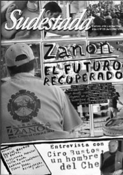

Buscar
Spyro Gyra: 30 años de jazz
Exponente del "jazz pop fusión" y precursor del estilo smooth jazz, el legendario grupo Spyro Gyra lanzó su primer disco en 1977. Desde entonces su sonido se proyectó internacionalmente, convirtiéndose en una de las bandas de mayor vigencia y actividad creadora en el jazz contemporáneo.
Edición N° 60
Julio 2007
Revista bimensual
Comprar edición impresaSumario
- Zanon: el futuro recuperado (Fasinpat)
- La amenaza
- Daniel Moyano (2º parte)
- Ciro Bustos: un hombre del Che
- Latinoamérica: continente adentro
- Spyro Gyra: 30 años de jazz
- Biblioteca Bella Vista
Compartir Articulo
Corría el año 1974. Eran tiempos en que la música popular de los Estados Unidos estaba regida por la comercialización de bandas de rock, la renovación del soul, y cuando comenzaban a fluir las tonadas y los ritmos bailables del naciente disco. Mientras ello acontecía, en la escena del jazz se gestaba una revolución. El lenguaje de este género musical se enriquecía con la ampliación del rango estilístico y del concepto rítmico, la amplificación y los instrumentos electrónicos. Se fraguaba entonces lo que más tarde se daría en etiquetar como "jazz fusión".
Bien es cierto que no ejercería en la corriente principal del jazz una influencia determinante comparable a las revoluciones que le precedieron (el bebop, el cool o el free jazz); sin embargo, las mezclas y síntesis con otras texturas y ritmos, principalmente el rock, crearon nuevas atmósferas musicales que conquistaron a nuevos y amplios auditorios.
Aquella época de exploración y experimentación musical tuvo a grupos emblemáticos, tales como Return to Forever, The Mahavishnu Orchestra y Weather Report.
El epicentro de este impulso renovador fue Nueva York. No lejos de ahí, en la ciudad de Buffalo, brotaba un original proyecto que, poco después, establecería un nuevo concepto en el jazz contemporáneo.
Los orígenes
Buffalo era por esos días un pequeño Chicago. El ambiente artístico local crecía con las presentaciones en vivo de grupos de blues, soul, jazz y rock.
Las noches de los martes en el Jack Daniel's, un club citadino, tocaba una floreciente banda que combinaba el jazz con la música pop. La cálida sonoridad del saxo alto y los solos de teclado, acompañados por la línea del bajo eléctrico y la batería, restallaban el ambiente, dominado por el humo de cigarrillo y el tintineo de las copas.
La agrupación estaba liderada por dos jóvenes neoyorquinos: el saxofonista Jay Beckenstein y el pianista Jeremy Wall.
Beckenstein había nacido en Brooklyn, en 1951. Su entorno familiar contribuyó a su pasión por la música: su madre fue cantante de ópera y su padre era un amante del jazz, quien introdujo al pequeño Jay a la música de los grandes saxofonistas Charlie Parker y Lester Young. A la edad de siete años, comenzó a recibir lecciones de saxofón y, al final de la secundaria, tocaba en la banda de su escuela. Tras la conclusión de sus estudios musicales en la Universidad del Estado de Nueva York, Jay Beckenstein integraba grupos de blues y rhythm and blues en la escena musical de Buffalo. Por esos días, se reencontró con Jeremy Wall, un amigo músico que había retornado de California, y juntos comenzaron a tocar un repertorio que incluía éxitos de blues y R&B en pequeños clubes de la ciudad. A la vez, comenzaron a crear un estilo nuevo. Una noche en el escenario del Jack Daniel's comenzaron a interpretar música instrumental, improvisando sobre la base de temas de Earth, Wind and Fire, Marvin Gaye, Weather Report y Miles Davis. Su sonido era una amalgama de ritmos tradicionales, tonadas de R&B y largos solos. Este sería el principio de una fascinante aventura musical.
De inmediato, la banda adquirió notoria popularidad. En cierta ocasión, cuando el propietario del club interrogó a Beckenstein por el nombre del grupo, éste, respondiendo en son de broma, le dijo "llámalo spirogyra", término que el saxofonista recordaba de sus clases de biología (la spirogyra es un alga pluricelular, un microorganismo acuático, de color verde brillante y largos filamentos). El exótico nombre fue escrito incorrectamente en el pequeño rótulo de la entrada, anunciando la presentación semanal. Así, de modo espontáneo y fortuito, nació un nombre que, andando el tiempo, encarnaría a uno de los grandes iconos del jazz de nuestro tiempo.
La primera grabación
En 1976, Jay Beckenstein se asoció con el baterista Richard Calandra, fundando la entidad Crosseyed Bear Productions. Alquilaron un pequeño estudio de grabación de 16 pistas, donde se registró la primera incursión discográfica de Spyro Gyra.
Un año después, bajo el sello Amherst Records, apareció su ópera prima que llevó por título el nombre de la banda. Beckenstein recuerda cómo él mismo, conduciendo su automóvil, se dedicó a distribuir los primeros 500 discos para la venta.
El álbum -del que se vendieron más de 70,000 copias- incluía nueve piezas pertenecientes tanto a Jay Beckenstein como a Jeremy Wall, quienes, en mi opinión, son hasta hoy los autores de las más bellas e inolvidables composiciones de un nutrido repertorio. "Shaker Song" -de alegre melodía, sonido caribeño y cadencia contagiante- es el tema representativo del primer LP de Spyro Gyra, y expresa la esencia y la originalidad de su estilo. En la grabación participaron dos nombres que aportarían una huella indeleble en la evolución del grupo: Tom Schuman, virtuoso tecladista, y Dave Samuels, brillante intérprete del vibráfono y la marimba. Sus sonidos se asociarían por siempre a la expresión instrumental de la banda.
Travesía musical
Morning Dance, el segundo disco, fue editado por el sello Infinity/MCA en 1979. Esta grabación terminó de definir en el plano estilístico el sonido armónico y rítmico de Spyro Gyra, que le hizo conquistar un amplísimo auditorio en los Estados Unidos y en la escena internacional. La inefable acogida del disco (que nunca imaginaron sus creadores), se expresó en su elevada demanda (un millón de álbumes vendidos), que le mereció el disco de platino. Su contenido incluye el clásico tema que le da nombre (su composición emblemática) y otros éxitos, tales como "Heliopolis" y "Rasul".
En esta segunda realización podemos apreciar, por otra parte, las que habrían de constituirse en notas dominantes de la propuesta musical de Spyro Gyra. Su sentido de la estructura presenta la mixtura del jazz con sonidos de la música popular: R&B, funk, rock y tonadas latinas. Su estilo ecléctico se expresa en suaves y enérgicas interpretaciones, intensidad rítmica, ideas originales y múltiples influencias.
Jay Beckenstein, líder, compositor y productor del grupo, ha afirmado sobre el carácter de Spyro Gyra: "Realmente no somos jazz, tampoco pop, ni rock, ni música latina... la música instrumental permite mucho más espacio creativo para que la audiencia u oyente se introduzca en la música y permite que su propia imaginación se expanda y contribuya con la experiencia".
El sonido inimitable y fácilmente reconocible de Beckenstein, intérprete de los saxofones alto, soprano y tenor, exhibe un fraseo post bop de impecable estilo. La brillantez y el colorido del saxo alto, las inflexiones y el vigor expresivo que emanan del tenor derivan hacia delicadas y suntuosas notas en el soprano, cuya textura lírica alcanza puntos álgidos de inspiración y belleza. Tales rasgos hacen de Jay Beckenstein un intérprete de exquisita factura entre los saxofonistas contemporáneos...
La nota completa en la edición gráfica de Sudestada nº60 - Julio de 2007
Comentarios
Gabriel García Higueras, desde Perú
Articulos más vistos


LIBRERÍA SUDESTADA

Colección infantil

Distribuidora de Libros

Suscripción

Sudestada en URUGUAY

Otros articulos de esta edición
Zanon: el futuro recuperado (Fasinpat)
Seis años atrás, una historia comenzó a escribirse en la soledad del sur patagónico. Una fábrica ceramista fue el escenario ...
Biblioteca Bella Vista
A fines de los 80, Susana Fiorito y Andrés Rivera compraron un depósito de forrajes donde, junto a otros militantes, ...
 Entrevista
Entrevista
Ciro Bustos: un hombre del Che
Cuarenta años después de la caída en combate de su jefe, Ciro Bustos rompe el silencio en una entrevista exclusiva ...
 Dossier
Dossier
Daniel Moyano (2º parte)
El exilio provocó en Daniel Moyano un cambio de escenario geográfico personal, pero no desde su literatura, que siempre tuvo ...
 Crónica viajera
Crónica viajera
Latinoamérica: continente adentro
Escenario de silencios y de luchas, América Latina sigue ofreciendo al tiempo un paisaje repetido de pueblos de pie y, ...
 Editorial
Editorial
La amenaza
Existe el riesgo de caer en lugares comunes, de repetirse. Incluso, el peligro de confundir la palabra de uno con ...